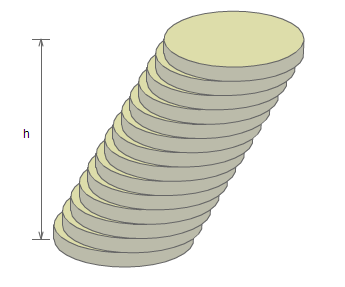

In an oblique cylinder, the bases (ends) remain parallel to each other, but the sides lean over at an angle that is not 90°. If they are at right angles to the bases, it is called a right cylinder, and this is the kind we see most often, such as a soup can. In the applet above, drag the orange dot to the left to create a right cylinder.
An interesting thing is that oblique cylinders have the same volume as a right cylinder of the same radius and height. The height must be the perpendicular height, but as long as the radius and height are the same the volume does not change. To see this, use the applet at Cylinder Volume. (Click on 'allow oblique' when you get there).

To see why this is, imagine the cylinder is composed of a set of thin discs, like coins. If you were to slide them sideways you would get an oblique cylinder shape, as in the figure above. The volume of the discs does not change as you make it oblique, therefore the total volume remains constant.